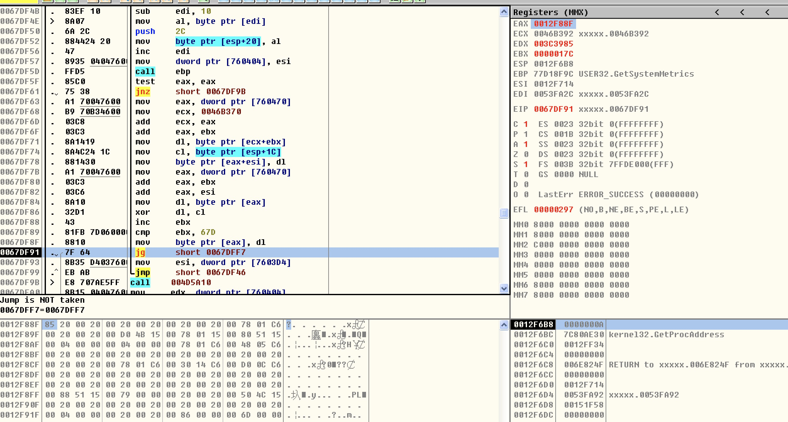
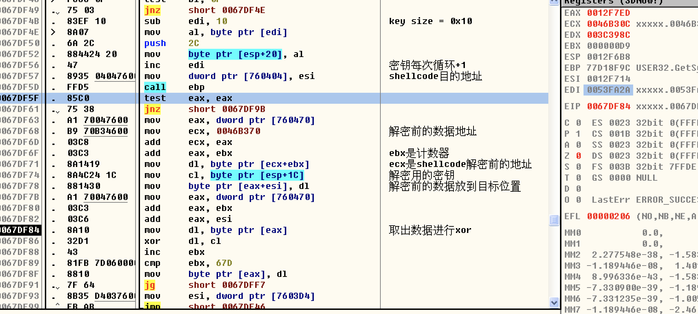
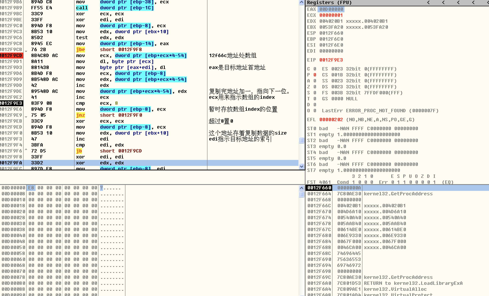
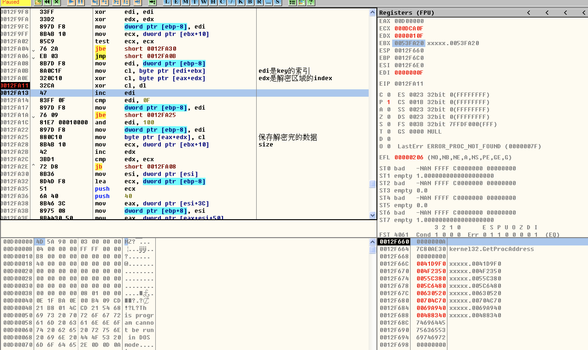

一个加密木马的分析
目标
主要分析木马的解密过程。
分析过程
使用ollydbg利用命令bp VirtualAlloc首先在VirtualAlloc处下断点，第一次是个size=0xE0，暂时忽略，第二次size=0xDCA00，看起来像是一个pe文件的大小了，调用地址也比较奇怪，是栈空间的地址，有此可以断定在此之前一定还有另一个解密过程，把代码揭秘到栈空间去执行。
先去看它第一次的解密过程，把它返回地址(0x12f88f)和数据(0x85)记下来，重新运行该样本，等它断在入口点时，在这个栈地址上下硬件断点，等这地方的数据成为0x85时再观察，来到了0x67DF8F地址处，如图所示：

接下来就是分析这片的代码干了什么事，经过分析后，我添加了注释，如下图所示：

其实就是简单的解密操作，源数据地址在0x46B370，大小为0x67D，解密密钥地址为0x53FA20,大小为0x10字节，目标地址为0x12F714。
接下来分析第二个解密的地方，首先在分配完内存后，使用硬件断点找到解密代码的地方，在0x12f9d3地址处把数据复制进目标地址，然后在0x12fa25地址处解密，先分析复制数据区域的代码，如图所示：

0012F66C 004020B1
0012F670 004D6A10
0012F674 00540A40
0012F678 005AAB40
0012F67C 00614BE0
0012F680 006E9330
0012F684 0067F000
0012F688 0046CA00
经过分析复制的过程是这样的：将这八个地址的数据，每次循环各取出一字节，按顺序复制到目标缓冲区中。
接下来分析解密过程：

解密也是使用的0x53FA20地址处的密钥，密钥与数据xor运算后，又使用了数据的索引的低16位进行了一次xor运算得到揭秘结果，通过，通过MZ和PE的标志，由此我们推断这是个PE文件。